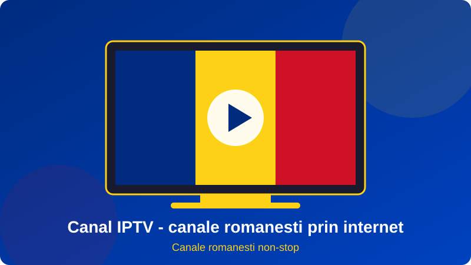
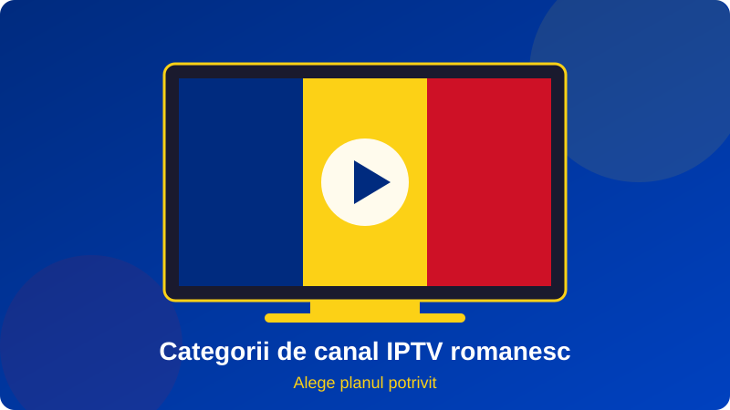

Cand spui ca vrei un canal iptv, de fapt vrei un lucru simplu: sa deschizi televizorul si sa gasesti postul preferat, in calitate buna, fara sa astepti si fara sa se opreasca imaginea in mijlocul filmului. Pentru romanii din tara, dar mai ales pentru cei din diaspora, fiecare post TV inseamna o legatura directa cu limba, cu stirile de acasa si cu emisiunile pe care le stiu de ani de zile.
Problema este ca nu toate canalele sunt la fel. Unele se incarca greu, altele dispar fara avertisment, iar listele gratuite gasite pe internet se opresc exact cand ai nevoie de ele. De aceea, in acest ghid explicam pe intelesul tuturor cum functioneaza un canal iptv, cum il testezi, cum il organizezi in aplicatie si cum eviti cele mai des intalnite probleme.
Vom vorbi despre canalele generaliste, de stiri, sport, filme si copii, despre ghidul de programe, despre viteza de internet necesara si despre dispozitivele compatibile. Echipa Romania IPTV lucreaza zilnic cu familii de romani din Germania, Italia, Spania, Marea Britanie si Belgia, iar sfaturile de mai jos vin din situatii reale, nu din teorie. Daca vrei o imagine de ansamblu, citeste intai ghidul principal despre iptv romania.

Cuprins
- Ce este un canal IPTV si cum functioneaza
- Tipuri de canal IPTV romanesc pe care le poti urmari
- Cum verifici calitatea unui canal IPTV
- Ghid de program (EPG) si organizarea canalelor
- Canal IPTV in diaspora: ce trebuie sa stii
- Dispozitive si aplicatii pentru fiecare canal IPTV
- Probleme frecvente la un canal IPTV si solutii
- Cum alegi furnizorul pentru canalele tale IPTV
- Intrebari frecvente
Ce este un canal IPTV si cum functioneaza
IPTV inseamna Internet Protocol Television: semnalul TV circula prin internet, in pachete de date, la fel ca un clip video online. Un canal iptv este, asadar, un flux live care ajunge la aplicatia ta de pe serverul furnizorului. Nu ai nevoie de antena, de parabola sau de decodor clasic, ci doar de o conexiune stabila si de un dispozitiv compatibil.
Diferenta dintre un canal IPTV si televiziunea clasica
La televiziunea prin cablu, operatorul decide pachetul si pretul, iar contractul dureaza de obicei 12 sau 24 de luni. La un post TV alegi tu perioada, schimbi dispozitivul cand vrei si poti folosi acelasi abonament la mutarea intr-o alta tara. Flexibilitatea aceasta este motivul principal pentru care tot mai multi romani renunta la cablu.
Ce se intampla din momentul in care apesi pe un canal
Cand selectezi un canal iptv, aplicatia cere fluxul de la server, il primeste in secunde si il afiseaza pe ecran. Daca serverul este supraincarcat sau conexiunea ta este lenta, apar blocaje. Tocmai de aceea calitatea infrastructurii furnizorului conteaza mai mult decat numarul de canale promis in reclame.
Tipuri de canal IPTV romanesc pe care le poti urmari
O lista completa acopera toate gusturile din familie. Iata categoriile pe care ar trebui sa le gasesti intr-un abonament serios si ce urmaresc oamenii cel mai des.
Canale generaliste si de divertisment
Pro TV, Antena 1, Kanal D, Prima TV, Acasa si TVR 1 sunt primele cautate. Pentru multi romani, un post TV generalist inseamna serialele de seara, show-urile de weekend si telejurnalul. Verifica in special daca postul ruleaza fara decalaj fata de emisia originala.
Canale de stiri
Digi 24, Antena 3 CNN, Realitatea Plus, B1 TV si Romania TV sunt esentiale pentru cei care vor sa fie la curent cu ce se intampla acasa. Un canal iptv de stiri trebuie sa fie stabil mai ales in momente importante, precum alegeri sau evenimente speciale, cand traficul creste brusc.
Canale de sport
Digi Sport, Prima Sport, Look Sport si Eurosport atrag cel mai mare trafic, in special in zilele de meci. Pentru fotbal, alege un furnizor care ofera servere dedicate sportului si care raspunde rapid la mesaje. Un canal iptv sportiv slab strica orice seara.
Canale pentru filme, copii si muzica
Pentru familie conteaza si canalele de filme (HBO, Cinemax, AXN), cele pentru copii (Cartoon Network, Disney Channel, Minimax) si cele muzicale (Kiss TV, Utv, Magic TV). Un abonament bun le aduna pe toate intr-o singura lista, pe categorii, ca sa gasesti repede ce cauti. Lista completa o gasesti in ghidul despre canale romanesti.

Cum verifici calitatea unui canal IPTV
Inainte sa platesti, testeaza. Un test gratuit de 24 pana la 48 de ore iti arata mai mult decat orice promisiune. Iata ce sa urmaresti la fiecare canal iptv.
Imagine, sunet si sincronizare
Verifica daca imaginea este clara, fara pixeli sau artefacte, si daca sunetul se potriveste cu buzele personajelor. Un decalaj de cateva secunde fata de emisia live poate strica meciurile si transmisiunile in direct. Compara un post TV cu aceeasi emisiune pe site-ul oficial al postului.
Stabilitate la ore de varf
Testul adevarat se face seara, intre 19:00 si 23:00, cand toata lumea se uita la televizor. Daca un canal iptv ramane stabil in aceasta perioada, inseamna ca serverul este bine dimensionat. Daca se blocheaza, treci mai departe.
Viteza de internet necesara
Pentru un canal HD ai nevoie de minim 10 Mbps, iar pentru Full HD sau 4K de 25 Mbps sau mai mult. Daca mai multe persoane folosesc reteaua in acelasi timp, ia in calcul un plan mai rapid. Un cablu Ethernet este mereu mai sigur decat Wi-Fi.
Ghid de program (EPG) si organizarea canalelor
Ghidul electronic de programe iti arata ce ruleaza acum si ce urmeaza pe fiecare post TV. Fara el, derulezi la nesfarsit prin liste lungi. Cu el, gasesti emisiunea in cateva secunde si poti programa reamintiri.
Favorite si categorii
Aproape orice aplicatie iti permite sa marchezi canalele preferate. Fa-ti o lista scurta cu cele 10-15 canale pe care le urmaresti zilnic si pune-o prima. Astfel, fiecare canal iptv important este la un click distanta, iar familia nu mai cauta minute in sir telecomanda si postul potrivit.
Redare cu intarziere si inregistrari
Unii furnizori ofera catch-up, adica posibilitatea de a revedea emisiuni din ultimele zile. E util cand pierzi un episod dintr-un serial. Intreaba inainte de achizitie daca fiecare post TV din lista are aceasta optiune.
Canal IPTV in diaspora: ce trebuie sa stii
Romanii din strainatate sunt cei mai mari fani ai televiziunii prin internet. Din Germania pana in Spania, un canal iptv inseamna acelasi program ca acasa, fara parabola si fara taxe de instalare. Un singur abonament functioneaza oriunde ai internet.
Fusul orar si programul
Romania are ora Europei de Est, deci in Italia sau Germania programul se muta cu o ora, iar in Marea Britanie cu doua. Ghidul de programe se ajusteaza automat in majoritatea aplicatiilor. Retine doar ca ora unui meci difera in functie de tara.
Restrictii geografice si solutii
Unele canale blocheaza accesul din afara tarii in transmisia oficiala online. Un furnizor IPTV specializat pe diaspora rezolva aceasta problema, astfel incat fiecare post TV sa se vada la fel de bine in Bruxelles ca in Bucuresti. Pentru detalii, vezi ghidul despre buy iptv si pe cel despre big iptv.
Dispozitive si aplicatii pentru fiecare canal IPTV
Nu ai nevoie de echipamente scumpe. Un televizor Smart, un box Android sau chiar un telefon sunt suficiente pentru a urmari orice canal iptv.
Smart TV, box Android si Fire TV Stick
Samsung, LG si Android TV accepta aplicatii IPTV direct. Pentru un televizor mai vechi, un Fire TV Stick sau un box Android transforma ecranul intr-unul inteligent in cateva minute. Daca vrei sa alegi un echipament, citeste si box iptv.
Telefon, tableta si computer
Pe mobil poti urmari un canal iptv in drum spre serviciu sau in vacanta, iar pe computer il deschizi intr-un player dedicat. Instalarea dureaza, de obicei, sub 10 minute, iar echipa de suport te poate ghida pas cu pas pe WhatsApp.
Probleme frecvente la un canal IPTV si solutii
Orice serviciu live poate avea momente mai slabe. Important este sa stii ce faci cand apar.
Imaginea se blocheaza sau se opreste
Verifica viteza internetului, reporneste routerul si aplicatia, apoi incearca alt server daca ai optiunea. Daca problema afecteaza doar un singur canal iptv, scrie suportului, deoarece sursa postului respectiv poate fi in curs de actualizare.
Canalul nu se incarca deloc
Goleste memoria cache a aplicatiei, verifica data si ora dispozitivului si reintrodu datele contului. Un canal iptv care nu porneste dupa aceste verificari trebuie semnalat furnizorului, care il poate inlocui rapid.
Sunet fara imagine sau invers
De cele mai multe ori este o problema de codec sau de player. Schimba playerul din setari sau instaleaza o aplicatie alternativa. Daca vrei sa compari optiuni, vezi si best iptv romania.
Cum alegi furnizorul pentru canalele tale IPTV
Calitatea fiecarui canal iptv depinde in final de furnizorul din spate. Iata criteriile pe care le folosim si noi cand recomandam un serviciu.
Criterii esentiale
- Test gratuit inainte de plata.
- Suport in limba romana, pe WhatsApp, cu raspuns rapid.
- Preturi afisate clar, fara taxe ascunse.
- Lista de canale actualizata constant.
- Servere stabile in orele de varf si la meciuri.
Comparatie rapida
| Criteriu | Lista gratuita | Furnizor serios |
|---|---|---|
| Stabilitate | Scazuta | Ridicata |
| Suport | Inexistent | In romana, rapid |
| Actualizari | Rare | Constante |
| Siguranta datelor | Incerta | Transparenta |
Pentru piata din alte limbi, exista si furnizori specializati, precum greek iptv sau tilaa iptv, dar pentru canale romanesti si suport in limba ta, Romania IPTV ramane alegerea naturala.
Testeaza gratuit canalele romanesti
Scrie-ne pe WhatsApp si primesti un test fara obligatii. Verifici singur fiecare canal IPTV inainte sa platesti.
Cere testul pe WhatsAppIntrebari frecvente
Ce este un canal IPTV?
Un canal IPTV este un post de televiziune transmis prin internet, nu prin antena sau cablu. Primesti fluxul video direct pe aplicatie, iar un abonament iti ofera zeci sau sute de astfel de canale intr-o singura lista.
Cum aleg un canal IPTV romanesc bun?
Verifica daca postul are imagine HD stabila, sunet sincronizat, ghid de programe (EPG) si disponibilitate non-stop. Cere un test gratuit si urmareste canalul in ora de varf, seara, cand serverele sunt cele mai incarcate.
De ce se blocheaza un canal IPTV in timpul meciurilor?
Cauza este de obicei aglomerarea serverului sau o viteza insuficienta a internetului. Foloseste cablu Ethernet, minim 10 Mbps pentru HD si cere furnizorului un server alternativ pentru canalele sportive.
Pot vedea un canal IPTV romanesc din strainatate?
Da. Abonamentul functioneaza oriunde ai internet stabil: Germania, Italia, Spania, Marea Britanie, Belgia sau Franta. Nu ai nevoie de antena, parabola sau contract cu un operator local.
Cate canale IPTV romanesti primesc la un abonament?
Un pachet bun contine, de regula, intre 100 si 300 de canale romanesti: generaliste, stiri, sport, filme, copii, muzica si regionale. Conteaza calitatea si stabilitatea, nu doar cifra mare din oferta.
Cum adaug un canal IPTV nou in lista mea?
Daca folosesti o lista M3U sau o aplicatie cu playlist, canalele noi apar automat cand furnizorul actualizeaza lista. Poti cere echipei de suport sa adauge un post anume, iar uneori il primesti chiar in aceeasi zi.
Pe ce dispozitive pot urmari un canal IPTV?
Pe Smart TV (Samsung, LG, Android TV), box Android, Fire TV Stick, Apple TV, telefon, tableta si computer. Instalezi o singura aplicatie si introduci datele primite de la furnizor.
Cat costa un abonament cu canale IPTV romanesti?
Preturile corecte pornesc de la 8-15 euro pe luna si scad la 4-7 euro pe luna la planurile anuale. Ofertele mult sub aceste valori ascund, de obicei, servere slabe sau lipsa de suport.
Concluzie
Un canal iptv bun inseamna imagine clara, sunet curat, ghid de programe la zi si un furnizor care raspunde cand ai nevoie. Testeaza inainte sa platesti, alege dispozitivul potrivit, verifica viteza internetului si ramai la servicii transparente. Asa vei avea mereu televiziunea romaneasca la indemana, oriunde te-ai afla.
Pentru mai multe informatii, citeste si ghidurile despre iptv romania, buy iptv, big iptv si box iptv. Apoi scrie-ne pe WhatsApp si porneste-ti canalele preferate chiar astazi cu Romania IPTV.